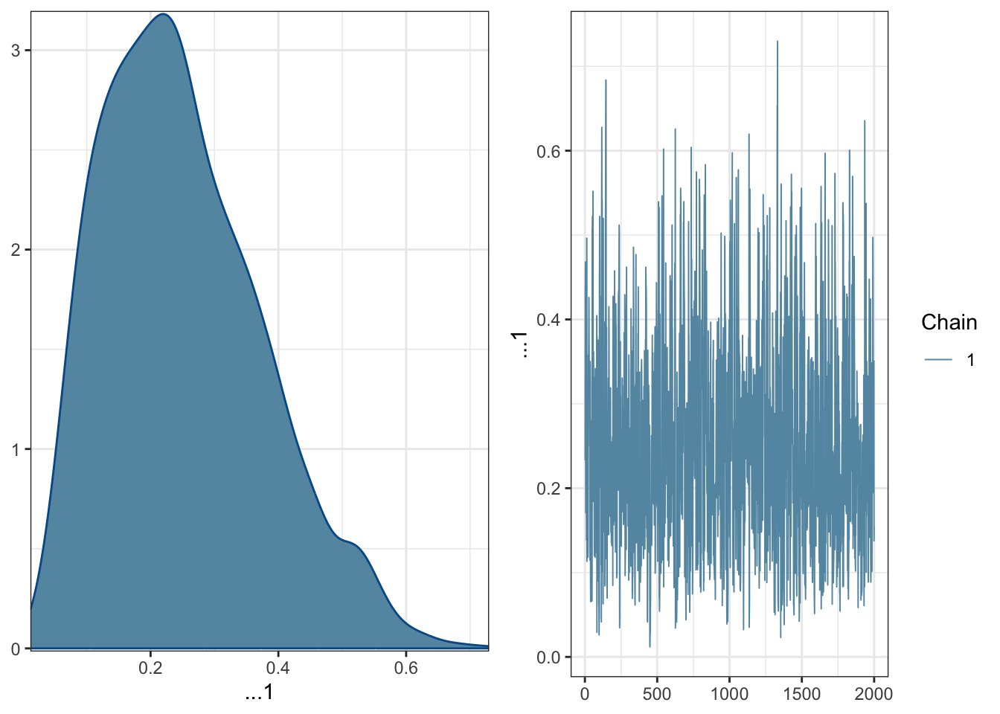
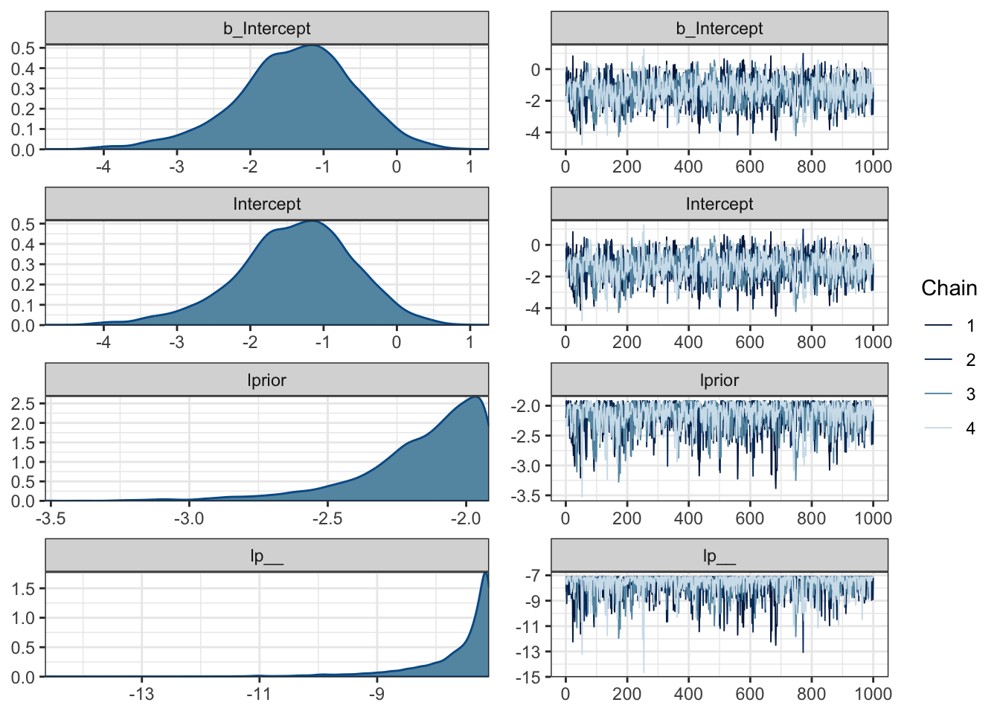
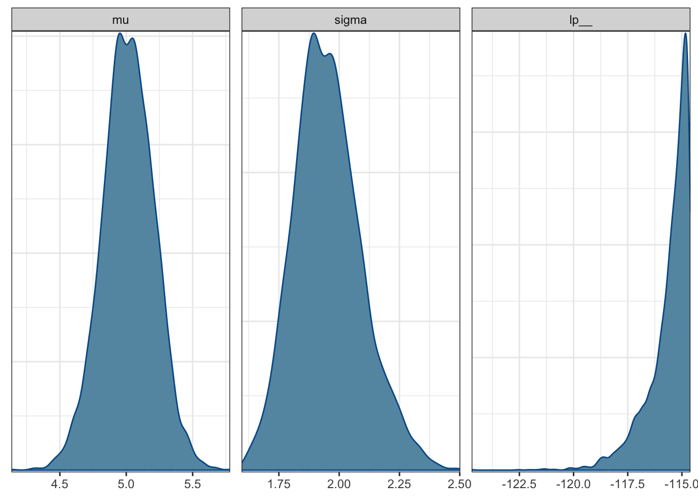
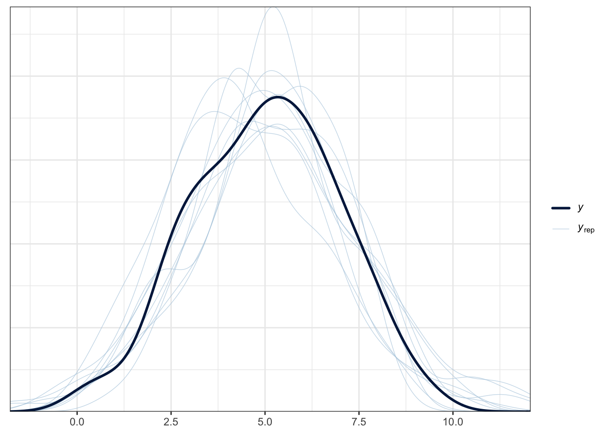

library(tidyverse)
library(rstan)
library(cmdstanr)
library(rethinking)
library(brms)
library(posterior)
library(bayesplot)
library(loo)
library(shinystan)
library(bayestestR)
library(tidybayes)
library(tidybayes.rethinking) # mjskay/tidybayes.rethinking
library(performance)
library(parameters)
library(broom)
library(broom.mixed)
library(modelsummary)
library(marginaleffects)
library(ggeffects)
library(ggformula)
library(skimr)
options(mc.cores = parallel::detectCores(), brms.backend = "cmdstanr")
rstan_options(auto_write = TRUE)
rstan_options(threads_per_chain = 1)
check_cmdstan_toolchain(fix = TRUE, quiet = TRUE)
register_knitr_engine(override = FALSE)
theme_set(theme_bw())stan
Stan ecosystem
Setup environment
Specify and fit model and summarize posterior
data {
int<lower=0> N;
array[N] int<lower=0, upper=1> y;
}
parameters {
real<lower=0, upper=1> theta;
}
model {
theta ~ beta(1, 1); // uniform prior on interval 0,1
y ~ bernoulli(theta); // likelihood
}y <- c(0, 1, 0, 0, 0, 0, 0, 0, 0, 1)
d <- list(N = length(y), y = y)m1$sample(data = d) |> as_draws() |> mcmc_combo()m2 <- ulam(
alist(
theta ~ dbeta(1, 1),
y ~ dbern(theta)
), data = list(y = y), chains = 4, cores = 4)
summary(m2)extract.samples(m2) |> as_draws() |> mcmc_combo()
m3 <- brm(y ~ NULL, family = "bernoulli", data = d)mcmc_combo(m3)
Statistical rethinking
grid_size <- 100
p_grid <- seq(from = 0, to = 1, length.out = grid_size)
prior <- dbinom(x = 2, size = 9, prob = p_grid)
likelihood <- dbinom(x = 6, size = 9, prob = p_grid)
unstd.posterior <- likelihood * prior
posterior <- unstd.posterior / sum(unstd.posterior)What I did above is the following: I throw the globe of the earth nine times. I’m assuming the probability W/L equals 2/9. This is my prior probability. When I observe the data I see that the proportion of W/L from my experiment is 6/9. These are my experimental observations. I then calculate what the conditional probability is — given my conviction and the data I have observed.
gf_line(prior ~ p_grid, color = "orange") |>
gf_line(likelihood ~ p_grid, color = "skyblue") |>
gf_line(posterior ~ p_grid, color = "red")gf_dist("beta", shape1 = 1, shape2 = 1)globe.1 <- quap(
alist(
W ~ dbinom(W+L, p) , # binomial likelihood
p ~ dunif(0, 1) # uniform prior [0,1]
),
data = list(W = 6, L = 3))
precis(globe.1)gf_dist("beta", shape1 = 2, shape2 = 7, color = "orange")globe.2 <- quap(
alist(
W ~ dbinom(W+L, p), # binomial likelihood
p ~ dbeta(2, 7) # beta prior - [ 2W & 7L ]
),
data = list(W = 6, L = 3))
precis(globe.2)nsamples <- 10000
prior <- extract.prior(globe.1, nsamples)
posterior <- extract.samples(globe.1, nsamples)gf_density(~ prior$p, fill = "orange") |>
gf_density(~ posterior$p, fill = "red")Bayesian data analysis with R and Stan: A hands-on approach
Bayesian Data Analysis is an approach to statistical modeling and inference based on Bayes’ theorem. It involves updating probability estimates for hypotheses as new data becomes available. R and Stan are commonly used tools for Bayesian Data Analysis.
Step 1: Build simple Bayesian model in Stan
First, let’s define a simple Bayesian model in Stan. For this example, we’ll use a normal distribution to model a set of observations.
data {
int<lower=0> N; // Number of observations
array[N] real y; // Observations
}
parameters {
real mu; // Mean parameter
real<lower=0> sigma; // Standard deviation parameter
}
model {
y ~ normal(mu, sigma); // Likelihood
// Priors can be added here if needed
}In this model, mu is the mean parameter, sigma is the standard deviation parameter, and y represents the observed data. The model assumes a normal distribution for the likelihood.
Step 2: Fit the Stan model and summarize results
Now, let’s move to the R code that compiles the Stan model, samples from the posterior distribution, and summarizes the results.
This code assumes that you have some observed data stored in the data vector.
# Generate some example data
data <- rnorm(100, mean = 5, sd = 2)
# Create a list of data for Stan
stan_data <- list(N = length(data), y = data)
# Sample from the posterior
stan_samples <- sampling(stan_model, data = stan_data, chains = 4, iter = 2000)
# Summarize posterior samples
summary(stan_samples)Step 3: Visualize posterior distributions
Now, let’s visualize the posterior distributions using the bayesplot package.
# Visualize posterior distributions
mcmc_trace(stan_samples)mcmc_dens(stan_samples)
These plots provide insights into the behavior of the Markov Chain Monte Carlo (MCMC) chains and the marginal posterior distributions of the parameters.
Step 4: Using the brms package for Bayesian regression
Next, let’s fit a Bayesian regression model using the brms package.
This example fits a simple Bayesian regression model with a normal distribution assumption for the response variable y based on predictor variable x.
# Create a data frame with predictor and response variables
df <- data.frame(y = data, x = rnorm(100))
# Fit a Bayesian regression model
brm_model <- brm(y ~ x, data = df)Start samplingRunning MCMC with 4 chains, at most 10 in parallel...
Chain 1 Iteration: 1 / 2000 [ 0%] (Warmup)
Chain 1 Iteration: 100 / 2000 [ 5%] (Warmup)
Chain 1 Iteration: 200 / 2000 [ 10%] (Warmup)
Chain 1 Iteration: 300 / 2000 [ 15%] (Warmup)
Chain 1 Iteration: 400 / 2000 [ 20%] (Warmup)
Chain 1 Iteration: 500 / 2000 [ 25%] (Warmup)
Chain 1 Iteration: 600 / 2000 [ 30%] (Warmup)
Chain 1 Iteration: 700 / 2000 [ 35%] (Warmup)
Chain 1 Iteration: 800 / 2000 [ 40%] (Warmup)
Chain 1 Iteration: 900 / 2000 [ 45%] (Warmup)
Chain 1 Iteration: 1000 / 2000 [ 50%] (Warmup)
Chain 1 Iteration: 1001 / 2000 [ 50%] (Sampling)
Chain 1 Iteration: 1100 / 2000 [ 55%] (Sampling)
Chain 1 Iteration: 1200 / 2000 [ 60%] (Sampling)
Chain 1 Iteration: 1300 / 2000 [ 65%] (Sampling)
Chain 1 Iteration: 1400 / 2000 [ 70%] (Sampling)
Chain 1 Iteration: 1500 / 2000 [ 75%] (Sampling)
Chain 1 Iteration: 1600 / 2000 [ 80%] (Sampling)
Chain 1 Iteration: 1700 / 2000 [ 85%] (Sampling)
Chain 1 Iteration: 1800 / 2000 [ 90%] (Sampling)
Chain 1 Iteration: 1900 / 2000 [ 95%] (Sampling)
Chain 1 Iteration: 2000 / 2000 [100%] (Sampling)
Chain 2 Iteration: 1 / 2000 [ 0%] (Warmup)
Chain 2 Iteration: 100 / 2000 [ 5%] (Warmup)
Chain 2 Iteration: 200 / 2000 [ 10%] (Warmup)
Chain 2 Iteration: 300 / 2000 [ 15%] (Warmup)
Chain 2 Iteration: 400 / 2000 [ 20%] (Warmup)
Chain 2 Iteration: 500 / 2000 [ 25%] (Warmup)
Chain 2 Iteration: 600 / 2000 [ 30%] (Warmup)
Chain 2 Iteration: 700 / 2000 [ 35%] (Warmup)
Chain 2 Iteration: 800 / 2000 [ 40%] (Warmup)
Chain 2 Iteration: 900 / 2000 [ 45%] (Warmup)
Chain 2 Iteration: 1000 / 2000 [ 50%] (Warmup)
Chain 2 Iteration: 1001 / 2000 [ 50%] (Sampling)
Chain 2 Iteration: 1100 / 2000 [ 55%] (Sampling)
Chain 2 Iteration: 1200 / 2000 [ 60%] (Sampling)
Chain 2 Iteration: 1300 / 2000 [ 65%] (Sampling)
Chain 2 Iteration: 1400 / 2000 [ 70%] (Sampling)
Chain 2 Iteration: 1500 / 2000 [ 75%] (Sampling)
Chain 2 Iteration: 1600 / 2000 [ 80%] (Sampling)
Chain 2 Iteration: 1700 / 2000 [ 85%] (Sampling)
Chain 2 Iteration: 1800 / 2000 [ 90%] (Sampling)
Chain 2 Iteration: 1900 / 2000 [ 95%] (Sampling)
Chain 2 Iteration: 2000 / 2000 [100%] (Sampling)
Chain 3 Iteration: 1 / 2000 [ 0%] (Warmup)
Chain 3 Iteration: 100 / 2000 [ 5%] (Warmup)
Chain 3 Iteration: 200 / 2000 [ 10%] (Warmup)
Chain 3 Iteration: 300 / 2000 [ 15%] (Warmup)
Chain 3 Iteration: 400 / 2000 [ 20%] (Warmup)
Chain 3 Iteration: 500 / 2000 [ 25%] (Warmup)
Chain 3 Iteration: 600 / 2000 [ 30%] (Warmup)
Chain 3 Iteration: 700 / 2000 [ 35%] (Warmup)
Chain 3 Iteration: 800 / 2000 [ 40%] (Warmup)
Chain 3 Iteration: 900 / 2000 [ 45%] (Warmup)
Chain 3 Iteration: 1000 / 2000 [ 50%] (Warmup)
Chain 3 Iteration: 1001 / 2000 [ 50%] (Sampling)
Chain 3 Iteration: 1100 / 2000 [ 55%] (Sampling)
Chain 3 Iteration: 1200 / 2000 [ 60%] (Sampling)
Chain 3 Iteration: 1300 / 2000 [ 65%] (Sampling)
Chain 3 Iteration: 1400 / 2000 [ 70%] (Sampling)
Chain 3 Iteration: 1500 / 2000 [ 75%] (Sampling)
Chain 3 Iteration: 1600 / 2000 [ 80%] (Sampling)
Chain 3 Iteration: 1700 / 2000 [ 85%] (Sampling)
Chain 3 Iteration: 1800 / 2000 [ 90%] (Sampling)
Chain 3 Iteration: 1900 / 2000 [ 95%] (Sampling)
Chain 3 Iteration: 2000 / 2000 [100%] (Sampling)
Chain 4 Iteration: 1 / 2000 [ 0%] (Warmup)
Chain 4 Iteration: 100 / 2000 [ 5%] (Warmup)
Chain 4 Iteration: 200 / 2000 [ 10%] (Warmup)
Chain 4 Iteration: 300 / 2000 [ 15%] (Warmup)
Chain 4 Iteration: 400 / 2000 [ 20%] (Warmup)
Chain 4 Iteration: 500 / 2000 [ 25%] (Warmup)
Chain 4 Iteration: 600 / 2000 [ 30%] (Warmup)
Chain 4 Iteration: 700 / 2000 [ 35%] (Warmup)
Chain 4 Iteration: 800 / 2000 [ 40%] (Warmup)
Chain 4 Iteration: 900 / 2000 [ 45%] (Warmup)
Chain 4 Iteration: 1000 / 2000 [ 50%] (Warmup)
Chain 4 Iteration: 1001 / 2000 [ 50%] (Sampling)
Chain 4 Iteration: 1100 / 2000 [ 55%] (Sampling)
Chain 4 Iteration: 1200 / 2000 [ 60%] (Sampling)
Chain 4 Iteration: 1300 / 2000 [ 65%] (Sampling)
Chain 4 Iteration: 1400 / 2000 [ 70%] (Sampling)
Chain 4 Iteration: 1500 / 2000 [ 75%] (Sampling)
Chain 4 Iteration: 1600 / 2000 [ 80%] (Sampling)
Chain 4 Iteration: 1700 / 2000 [ 85%] (Sampling)
Chain 4 Iteration: 1800 / 2000 [ 90%] (Sampling)
Chain 4 Iteration: 1900 / 2000 [ 95%] (Sampling)
Chain 4 Iteration: 2000 / 2000 [100%] (Sampling)
Chain 1 finished in 0.0 seconds.
Chain 2 finished in 0.0 seconds.
Chain 3 finished in 0.0 seconds.
Chain 4 finished in 0.0 seconds.
All 4 chains finished successfully.
Mean chain execution time: 0.0 seconds.
Total execution time: 0.2 seconds.Found more than one class "stanfit" in cache; using the first, from namespace 'rstan'Also defined by 'rethinking'# Summarize the model
summary(brm_model) Family: gaussian
Links: mu = identity; sigma = identity
Formula: y ~ x
Data: df (Number of observations: 100)
Draws: 4 chains, each with iter = 2000; warmup = 1000; thin = 1;
total post-warmup draws = 4000
Regression Coefficients:
Estimate Est.Error l-95% CI u-95% CI Rhat Bulk_ESS Tail_ESS
Intercept 5.02 0.19 4.64 5.38 1.00 4197 2635
x -0.09 0.21 -0.49 0.31 1.00 3582 2681
Further Distributional Parameters:
Estimate Est.Error l-95% CI u-95% CI Rhat Bulk_ESS Tail_ESS
sigma 1.95 0.14 1.70 2.26 1.00 3924 2882
Draws were sampled using sample(hmc). For each parameter, Bulk_ESS
and Tail_ESS are effective sample size measures, and Rhat is the potential
scale reduction factor on split chains (at convergence, Rhat = 1).# Plot posterior predictions
pp_check(brm_model)Using 10 posterior draws for ppc type 'dens_overlay' by default.
Step 5: Leave-one-out cross-validation (LOO-CV)
Now, let’s perform Leave-One-Out Cross-Validation (LOO-CV) using the loo package.
# Compute LOO-CV for the model
loo_result <- loo(stan_samples, pars = "lp__")Warning: Some Pareto k diagnostic values are too high. See help('pareto-k-diagnostic') for details.# Display LOO-CV diagnostics
loo_result
Computed from 4000 by 1 log-likelihood matrix.
Estimate SE
elpd_loo -116.7 NA
p_loo 1.4 NA
looic 233.5 NA
------
MCSE of elpd_loo is NA.
MCSE and ESS estimates assume MCMC draws (r_eff in [0.4, 0.4]).
Pareto k diagnostic values:
Count Pct. Min. ESS
(-Inf, 0.7] (good) 0 0.0% <NA>
(0.7, 1] (bad) 1 100.0% <NA>
(1, Inf) (very bad) 0 0.0% <NA>
See help('pareto-k-diagnostic') for details.LOO-CV helps assess the predictive performance of the model by comparing its performance on held-out data.
Step 6: Visualizing Bayesian model predictions
Finally, let’s simulate and visualize Bayesian model predictions.
# Extract posterior samples
posterior_samples <- as.matrix(stan_samples)
# Simulate predictions
simulated_predictions <- vector("list", 1000)
for (i in 1:1000) {
simulated_predictions[[i]] <- rnorm(n = length(data), mean = posterior_samples[i, "mu"], sd = posterior_samples[i, "sigma"])
}
# Plot observed data and simulated predictions
plot(data, col = "black", pch = 16, ylim = c(min(unlist(simulated_predictions)), max(unlist(simulated_predictions))))
for (i in 1:1000) {
lines(simulated_predictions[[i]], col = "gray", lty = 1, lwd = 0.1)
}This code simulates model predictions from the posterior distribution and visualizes them alongside the observed data.
These steps provide a comprehensive overview of Bayesian Data Analysis, from specifying a simple model in Stan to performing posterior analysis and visualizing results in R. Adjust the code based on your specific modeling needs and data.
Best practices
Start Simple: Begin with simple models and gradually move to more complex ones.
Visualize: Use diagnostic plots to assess the convergence and performance of the MCMC chains.
Prior Sensitivity Analysis: Explore how different prior choices impact the results.
Model Comparison: Consider model comparison techniques such as the Leave-One-Out Cross-Validation (LOO-CV) for model selection.
Bayesian Data Analysis with R and Stan provides a powerful and flexible framework for statistical modeling and inference. It is widely used in various fields, including biology, epidemiology, finance, and more. Understanding the principles of Bayesian inference and the practical aspects of implementing models in Stan can open up new possibilities for data analysis.